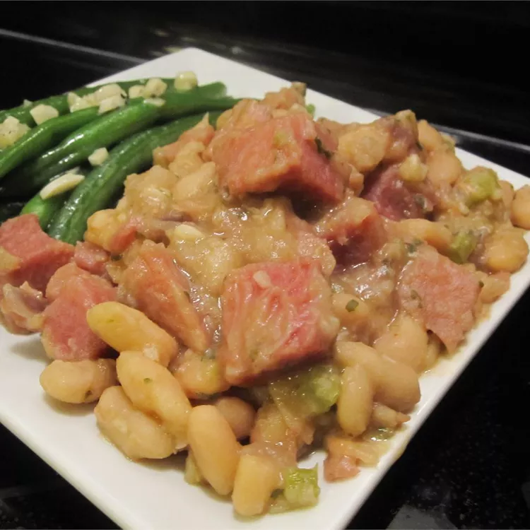

Ham and Beans

Description
This ham and beans recipe was created by my mom, and I really enjoyed it as a child. As an adult, my taste
changed just a bit, so I modified her recipe to kick it up a bit. It is fabulous even though the ingredients
list is quite short! This is a must-make with leftover ham and everyone agrees it's absolutely delicious.
Ingredients
- 1 pound dry great Northern beans
- ½ pound cooked ham, diced
- 1 small onion, diced
- ½ cup brown sugar
- 1 tablespoon dried parsley
- ¼ teaspoon cayenne pepper
- 6 cups water, or as needed to cover
- salt and pepper to taste
Steps
- Rinse beans; transfer to a large stockpot. Cover with cold water and let stand overnight or at least 8
hours. Drain and rinse beans.
- Return beans to stockpot; add ham, onion, sugar, parsley, and cayenne pepper. Pour in enough water to cover
and season with salt and pepper. Bring to a boil; reduce heat to low and simmer until beans are tender,
adding more water if needed, about 1 1/2 to 2 hours.